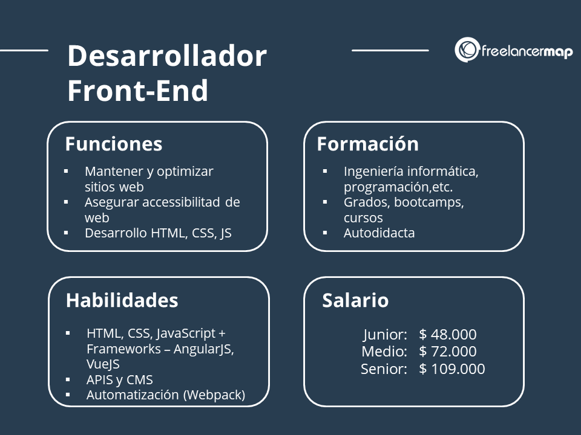

FRONTEND
El término "frontend" se refiere a la parte de un sistema o aplicación de software que interactúa directamente con los usuarios finales. En el contexto del desarrollo de software y sitios web, el frontend se encarga de la interfaz de usuario y de presentar la información de manera que sea fácilmente comprensible y accesible para los usuarios.
LICENCIATURA EN SISTEMAS COMPUTACIONALES
©Copyright 2023. JODAI MEZA NANGUSE